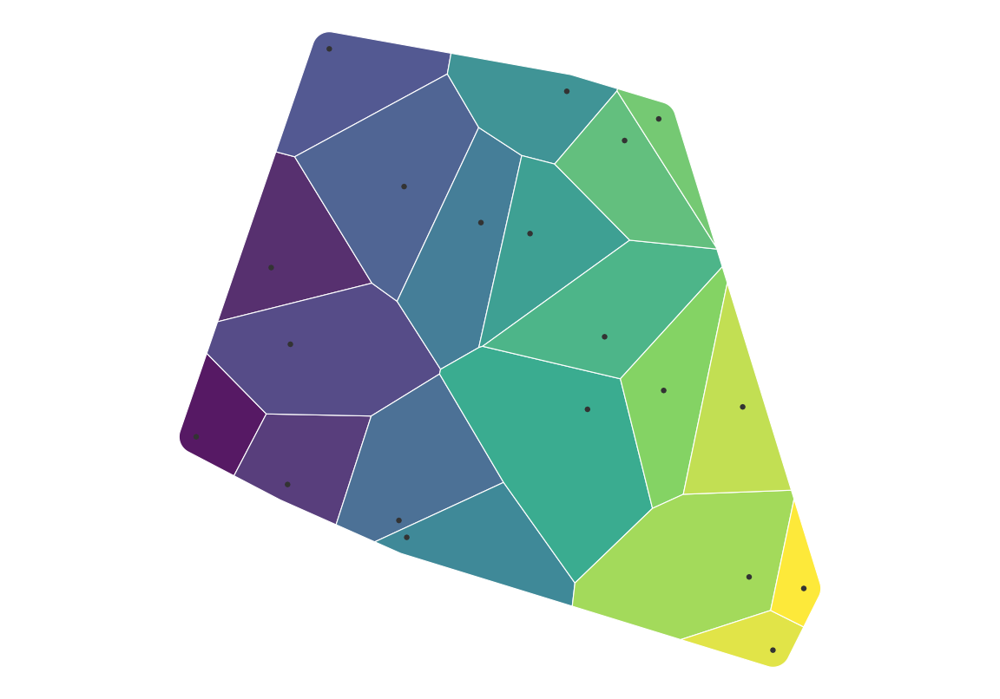

Plot a tessellation map with optional boundary, seeds, and features
Source:R/plotting.R
plot_tessellation_map.RdBuilds a layered ggplot2 map of polygon tessellations and optional overlays for a study boundary, seed points, and additional features.
Usage
plot_tessellation_map(
tessellation_sf,
boundary = NULL,
seeds_sf = NULL,
features_sf = NULL,
fill_col = NULL,
palette = "viridis",
na_fill = "grey90",
tile_alpha = 0.9,
outline_col = "white",
outline_size = 0.2,
features_col = "#333333",
features_size = 0.5,
seeds_col = "#1f77b4",
seeds_size = 1.5,
boundary_col = "#111111",
boundary_size = 0.6,
labels = FALSE,
label_col = "grid_id",
label_size = 2.7,
legend = TRUE,
legend_title = NULL,
theme = NULL,
target_crs = NULL,
title = NULL,
subtitle = NULL,
caption = NULL,
xlim = NULL,
ylim = NULL,
expand = TRUE
)Arguments
- tessellation_sf
An sf POLYGON/MULTIPOLYGON layer. Required.
- boundary
Optional sf/sfc polygon outline layer.
- seeds_sf
Optional sf/sfc point layer of seed locations.
- features_sf
Optional sf/sfc layer of additional features.
- fill_col
Name of the COLUMN in
tessellation_sfto map to fill;NULLfor no fill.fill_colandlabel_colname columns, whileoutline_col,features_col,seeds_colandboundary_colare colours.- palette
Viridis palette name. Default "viridis".
- na_fill
Fill for NA values. Default "grey90".
- tile_alpha
Alpha for filled polygons. Default 0.9.
- outline_col, outline_size
Colour and line width of the tessellation outline.
- features_col, features_size
Colour and point size of the feature overlay.
- seeds_col, seeds_size
Colour and point size of the seed overlay.
- boundary_col, boundary_size
Colour and line width of the boundary outline.
- labels
Logical; draw per-cell labels. Default FALSE.
- label_col
Name of the COLUMN holding the label text. Default
"grid_id".- label_size
Label text size. Default 2.7.
- legend
Logical; show fill legend. Default TRUE.
- legend_title
Optional legend title.
- theme
A ggplot2 theme, or NULL (the default) to use
ggplot2::theme_void(). The default is resolved inside the function rather than in the formals, so that a Suggests package is never evaluated before therequireNamespace()check has run.- target_crs
Optional CRS for plotting. When
NULL(the default) the tessellation's own CRS is used, or (if the tessellation has none) a CRS borrowed from the first overlay that carries one, so a CRS-less grid drawn with located features still lines up. Any layer that arrives without a CRS is brought into the plot's CRS instead of being dropped: reprojected when its coordinates look like longitude/latitude, otherwise stamped with a warning, since a stamp assumes the coordinates were already in that CRS.- title, subtitle, caption
Plot annotations.
- xlim, ylim
Optional numeric vectors of length 2 for coordinate limits (in the plot CRS). Default NULL (auto).
- expand
Logical; expand plot area slightly beyond data limits. Default TRUE.
See also
Other tessellation:
build_tessellation(),
create_grid_polygons(),
create_voronoi_polygons(),
get_voronoi_seeds()
Examples
if (requireNamespace("ggplot2", quietly = TRUE)) {
library(sf)
set.seed(1)
pts <- st_as_sf(
data.frame(x = runif(20, 0, 100), y = runif(20, 0, 100)),
coords = c("x", "y"), crs = 32632
)
tess <- build_tessellation(pts, method = "voronoi", quiet = TRUE)
p <- plot_tessellation_map(tess$cells, features_sf = pts,
fill_col = "cell_id", legend = FALSE)
p
}
